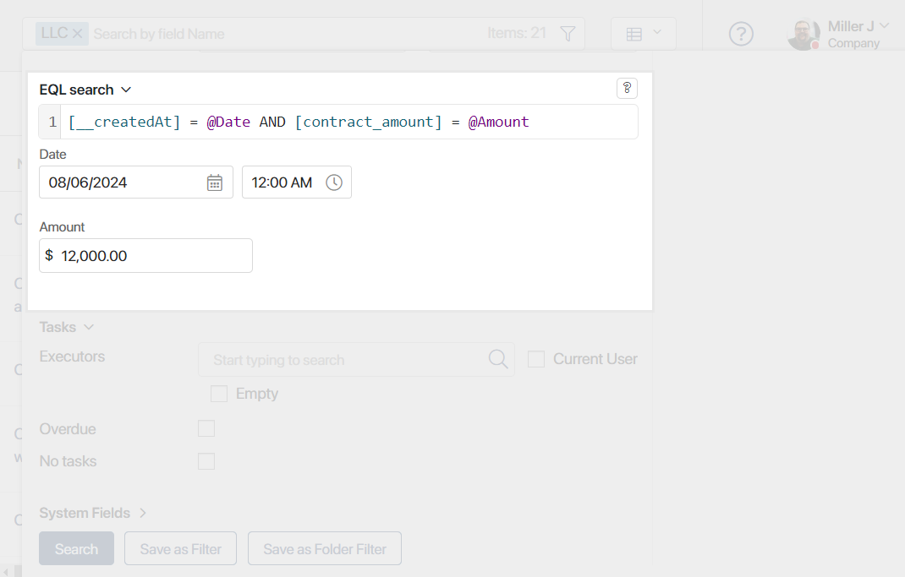

To find an app item by its parameters, its properties are assigned certain values in an EQL query. The structure of an EQL query follows the rules:
- To access app properties, the codes assigned to them when they were created are used. The variable code is required to be specified in square brackets:
[property_name]. - The search operation is specified. Standard mathematical signs or keywords of the EQL365 language are used.
- The value you are looking for is specified according to the rules for assigning values for properties of different types.
- You can use functions to assign a value or calculate it in a query, for example, to set a specific date or search for a current employee in the Users property.
- To assign values to properties within a query, you can create a parameter and reference it multiple times. The parameter value is specified after the query is composed, in the fields that are automatically added to the search window.
- To search by several conditions, logical operators are added to the query. You can also specify the condition that will be checked first.
- You can use subqueries to make complex data selections. Within a subquery, you can access the properties of any app in the system.
- All components of the query should be separated by spaces.
начало примера
Examples of searching for items using EQL queries
- [company_name] = 'WoodsBricks' or [company_name] like 'Woods'. Search for Company app items in which the Name field matches the first specified value completely or contains the second.
- [__createdAt] = Datetime(2023, 1) and [price] > 400. Search for records of the Orders app that have January 2023 in the Created field and have a value greater than 400 in the Price field.
- [contract] in (from [documents.contracts] select [__id] where [total] > 10000). Search for records of the Contractors app, where the Contract field specifies the app item with the amount exceeding 10,000.
конец примера
Assigning values to properties of different types
For correct processing of an EQL query, all its components should be separated by spaces. When writing a query, you can use the autocomplete option. To bring up the dropdown menu with available properties, functions, and operators, press Ctrl + Space.
For the correct processing of an EQL query, values for different types of properties used in the context of the apps are assigned in specific ways. See the table below for more details:
Data type |
Rule for assigning a value |
Example |
String |
Assigned with a string in single quotes. |
|
Number, Money |
The value of the searched number without quotes is used. Fractional numbers are separated by a period.
|
|
Yes/No switch |
Assigned with the value |
|
Date/Time |
It can be assigned in two ways:
You can use a shortened spelling of a part of the date, and you can also specify the time, including indicating the time zone.
A period relative to the current date is calculated using the function RelativeDatetime('start', 'end'). The start and end of the period are indicated in parentheses. Parameters are enclosed in single quotes and separated by commas. |
Both queries are used to find a Closed on field with a value later than January 31, 2023 afternoon.
|
Category |
Assigned with the category code in single quotes. |
[payment] in ('half', 'full'). The Partial and Full prepayment are selected in the Payment field. |
Phone number |
Assigned with a string in single quotes. |
[phone] = '+71234567890'. The Phone number field has the specified value |
Email address |
Assigned with a string in single quotes. |
[email] = 'admin@example.com'. The Email address field has the specified value. |
Full Name |
Assigned with a string in single quotes. |
[contact] like 'John'. The Contact person field has the specified value. |
Users |
Assigned with a string representation of the identifier in single quotes. To find the user’s identifier, go to Company > Employees, select the required page, and copy the value indicated in the page URL. |
[responsible] = '95806fe5-f8e8-460c-b2be-ce607068726c'. A certain user is specified in the Assigned to field. |
App |
To find the item’s identifier, go to the required app’s page, select a record, and copy the value indicated in the page URL.
|
|
Arbitrary app |
The search is performed by the item’s code in two ways:
|
[contract] in (select [__id] from [clients.orders] where [total] > 100). |
Status |
Assigned with a numeric representation of the status identifier. |
[__status] = 1. The item is assigned the first status. |
You can search for items with no values in their fields. For this purpose, the Is null or Is empty operation is used in the query. Exceptions are Phone number and Email address properties.
Creating parameters in an EQL query and and using them
To specify the desired value of a property, you can create a new parameter within the query. This parameter can be referenced multiple times in the query. The parameter value is set after composing the query, making it dynamic and changeable with each search.
A parameter is created using the @ symbol followed by an arbitrary name in English characters. After adding the parameter, an additional field with its name appears in the search window. Once the query is composed, you can specify the parameter value in the additional field and run the search.

If values are not specified in the additional fields, an expression using custom parameters can be saved as a filter. This allows employees to apply the composed EQL query, define property values through the parameter, and search for various information.
начало примера
Example of a query
[__createdBy] = @User AND [budget] = @Amount. In the query, the Author and Budget fields from the app are set using parameters. The employee can enter specific values for them, specifying any user and amount, and search for items with different authors and budget.
конец примера
Search operations
Search operations are used to assign a value in an EQL query. They can be indicated by mathematical signs or keywords of the EQL365 language.
Operations using symbols
These operations follow a similar principle. The first operand is a property code. A certain value is assigned to it. The second operand is a given value, another property, or a function. Such operations include:
- Equal is represented by the symbol =.
This operation is used to check for an exact match. It is not recommended to use it with properties of Date/Time type, because an exact match to the field value is unlikely.
начало примера
Examples of queries
- [client] = 'Smith'. Search for a client with the specified name.
- [payment] = [budget]. Search for Payment fields that match the Budget field.
- [responsible] = CurrentUser(). Search for items with the current user as the responsible user.
конец примера
- Not equal is represented by the symbol <>.
This operation is used to check the absence of an exact match.
начало примера
Examples of queries
- [product] <> 'Equipment'. Search for orders where the Product field does not contain the specified value.
- [payment] <> [budget]. Search for orders where the Payment field does not match the Budget field.
- [responsible] <> CurrentUser(). Search for items that do not specify the current user as responsible.
конец примера
- Greater than is represented by the symbol >.
This operation is used to for a strict comparison of greater values.
начало примера
Examples of queries
- [price] > 10000. Search for orders with the cost exceeding the specified value.
- [payment] > [budget]. Search for orders where the value in the Payment field is greater than the one in the Budget field.
- [shipping_date] > Datetime(2023, 1, 31, 12). Search for orders with a shipping date later than the specified date and 12 PM time.
конец примера
- Greater than or equal to is represented by the symbol >=.
This is a non-strict comparison operator.
начало примера
Examples of queries
- [price] >= 10000. Search for orders with the cost exceeding or equal to the specified value.
- [payment] >= [budget]. Search for orders where the value in the Payment field is greater than the one in the Budget field or is equal to it.
- [shipping_date] >= Datetime('Today'). Search for orders with shipping on or after 00:00:00 on the current date.
конец примера
- Less than is represented by the symbol <.
This a strict comparison operator.
начало примера
Examples of queries
- [price] < 10000. Search for orders with a cost lower than the specified value.
- [payment] < [budget]. Search for orders where the value in the Payment field is less than one in the Budget field.
- [shipping_date] < Datetime('Today'). Search for orders with shipping earlier that 00:00:00 on the current date.
конец примера
- Less than or equal to is represented by the symbol <=.
This is a non-strict comparison operator.
начало примера
Examples of queries
- [price] <= 10000. Search for orders with a cost exceeding or equal to the specified value.
- [payment] <= [budget]. Search for orders where the value in the Payment field is greater than one in the Budget field or is equal to it.
- [shipping_date] <= Datetime('Today'). Search for orders with shipping on or earlier than 00:00:00 on the current date.
конец примера
Operations with EQL365 keywords
- Partial string match is represented by the value
LIKE.
The LIKE operation is used to find a partial text match regardless of the case. It allows you to find occurrences of a specified value in any part of a string, returning all strings containing the searched fragment.
начало примера
Example
[responsible] like 'Alex'. Search for all items with this value in the Assigned to field.
конец примера
- Full string match is represented by the value
LIKEF.
The LIKEF operation allows you to search for exact matches of text, as well as set rules for finding a specified value in a certain part of a string. Using the operation helps to narrow down the search results.
Available properties for using LIKEF:
Rules for creating queries using the LIKEF operation:
- The _ symbol. The underscore means any symbol. It can be used before or after the searched value.
- The % symbol. The percent indicates that any number of characters can be included before or after the searched value.
- Combined symbols. The _ and % symbols can be combined and used in a query multiple times to create complex search templates.
- Character escaping. If the value contains control characters, (such as _ or %), they must be escaped with a backslash \.
начало примера
Examples
- [client] likef 'John'. Will search for entries where the Client field contains the exact value John. For example, John Smith, John Brown, etc.
- [string] likef '_010203'. Searches for strings starting with any character followed by the specified value 010203.
- [phone] likef '7912%'. Will recover all the entries where the phone number starts with 7912 and contains any number of symbols.
- [order_name] likef 'Products%10_2024'. Searches for orders whose name starts with the Products value, contains any number of symbols, ends with 10, any symbol, and 2024.
- [email] likef '_smith\%@example%'. Will search for emails that start with one unknown symbol, contain smith%@example, and end with any domain. The percent symbol, which is included in the email, is escaped by \.
конец примера
- Check for a missing value is represented by the value
IS NULLorIS EMPTY.
The IS NULL and IS EMPTY operations are used in any register to check for the absence of a value in a specified field. They allow you to find app items where the field does not contain any data.
начало примера
Example
[budget] is null or [budget] is empty. Search for orders where no budget is specified.
конец примера
- Inclusion in a set is represented by the value
IN.
This is a case-insensitive operation to check the contents of an app property. Values to be searched are enclosed in parentheses, separated by commas, and not separated by spaces. When using the current user search function in a query, the arguments can be specified in any order.
начало примера
Examples
- [order_number] in (6,7,8,9). Search for all orders with numbers containing the listed figures.
- [client] in ('Maria', 'Henry', 'Smith'). Search for all clients with the listed names.
- [__createdBy] in CurrentUser() or CurrentUser() in [__createdBy]. Equivalent queries to find all items created by the current system user.
- [orders] in (from [documents.contracts] select [__id] where [total] > 100). Select all orders with the contracts having a value of more than 100 in the Amount field. To read more about making such expressions, see Subqueries.
конец примера
Logical operators (connectives)
Logical operators are used to check multiple conditions in a single query:
- Logical AND. The
ANDoperator combines several conditions. In this case, all conditions must be met.
начало примера
Examples
- [prepayment] = 1000 and [budget] > 3000. Search for orders for which prepayment is equal to 1,000 and the budget exceeds 3,000.
- [__createdAt] >= Datetime(2023, 1) and [__createdAt] < Datetime(2023, 3). Find all items that were created during January and February 2023, i.e., the date is equal to or greater than January and not greater than March.
конец примера
- Logical OR. The
ORoperator combines several conditions and requires at least one of them to be met.
начало примера
Examples
- [order_number] in (6,7) or [client] is null. The search result will show the orders with the given numbers or for which the client is not specified.
- [client] like 'Alex' or [orders] in (from [documents.contracts] select [__id] where [total] > 10000). Search for orders where the client name contains the specified value or the contract amount exceeds 10,000.
конец примера
- Logical NOT. The
NOToperator is used for one condition. It must not be met.
начало примера
Examples
- not [payment] is null. Search for all items for which any status is set, i.e. the status contains a non-empty value.
- not [client_name] in ('Smith', 'Johnson'). Search for orders where the client’s name does not match the specified value.
конец примера
Priorities of logical operations
When using more than two operations in one query, you can specify which condition is prioritized. It is checked first and will be displayed in the search results above the others. In complex queries, parentheses are used to indicate the prioritized condition.
начало примера
Examples
- not ([client_name] like 'Aisha' or [client_name] like 'Albert'). Search for orders with client names that do not contain the first or the second indicated value.
- (not [client_name] = 'Alex') and [client_name] like 'Al'. Search for orders with client names that do not contain the first value Alex but have the second value Al.
конец примера
Functions
Functions in EQL queries can be used to assign a value to app properties as well as to calculate it:
Datetime().
The function defines the representation of the date specified in the function parameters.Parameters are written in parentheses with enumeration separated by commas.
Numeric values of the year, month, day, hour, minute, and second, as well as the string representation of the time zone, are specified as parameters. The only mandatory parameter is the year, the others are specified optionally. If no time is selected, the request accepts the value of zero hours, minutes, and seconds.
You can set the date with functions that are calculated at the time the query is executed:
Today. Current date.Now. Current time.
начало примера
Examples
- [__createdAt] > Datetime(2022). Search for items with a creation date later than 2022.
- [__createdAt] > Datetime(2023, 1, 31). Search for items with a creation date later than January 31, 2023.
- [finish_date] > Datetime(2023, 2, '+09:00'). Search for orders that were assembled later than February 2023 given the time zone.
- [__createdAt] < Datetime('Now'). Search for items with creation date earlier than the current time.
- [closing_date] > Datetime('Today'). Search for deals, the closing date of which is later than the current date.
конец примера
Time().
The function defines the representation of the time specified in the parameters. Numerical values of the hour, minute, and second are specified as parameters. The only mandatory parameter is the hour. Parameters are enclosed in parentheses and separated by commas.
начало примера
Examples
- [closing_time] < Time(17). Search for deals closed later than 5 PM.
- [closing_time] < Time(12, 30, 00). Search for deals closed later than 12:30 PM.
конец примера
The function determines a time interval calculated relative to the current date, taking into account the specified time zone in the system. The = or IN operators are used to calculate the function.
The search period is specified in parentheses. The function always specifies the start and end parameters of the period, enclosed in single quotes and separated by a comma. To calculate each parameter, an alphanumeric expression or their combination is used:
- Numeric designation: a positive or negative quantitative range for calculating the period. A minus sign is used for searching past periods, and a plus sign for future dates. Zero denotes the current date and does not require the use of a plus sign.
- Letter designation: a unit of time interval such as hour, day, year, etc.
Available letter designations for the time interval
|
The parameters are calculated sequentially. In this case, the calculation is not based on units from the current date, but on a calendar period of time.
For example, if the current date is December 11, 2023, and the start of the period in the function is specified as '-1m' (minus one month), then it will not subtract 30 days from the current date but rather a calendar month. Thus, the start of the period in the search results will be considered as November 1, 2023.
When specifying period parameters, it is important to consider the peculiarities of their calculation:
start. The parameter represents the start of the period relative to the current date. The calculated value is included in the search result. Examples of parameter input:- '0h'. Search from the current date and the beginning of the current hour.
- '+1m'. Search from the beginning of the next month.
- '-1w+1d'. The start date of the search is calculated as follows: subtract one calendar week from the current day and add one day. Thus, if the current day is Monday, the search starts from the beginning of last Tuesday.
end. The parameter represents the end of the period relative to the current date. When calculating the smallest time interval specified in the function, one unit is added. The resulting time value is not included in the search, i.e., all values less than but not equal to the calculated result are considered. Examples of parameter input:- '0h'. Search until the end of the current hour.
- '0d'. Search until the end of the current day.
- '+1m'. Until the end of the next month.
- '-1w+1d'. The end date of the search is calculated as follows: regardless of the current day of the week, the calculation starts from Monday of the previous calendar week. Then, the day specified in the parameter is added, as well as one unit of the smallest time interval — in this case, another day. The calculation results in the previous week's Wednesday. Since all values less than but not equal to the calculated parameter are included in the end of the period, the search is performed until the end of last Tuesday.
Please note that the start of the period after calculation should not be greater than or equal to its end, and the end should be less than or equal to the start. When composing such a request, you will see an error indicating an incorrectly specified format for relative dates.
начало примера
The most common examples of queries
- [date] IN RelativeDatetime('0d', '0d'). Search for the current date.
- [date] IN RelativeDatetime('-1d', '-1d'). Search for the previous day.
- [date] IN RelativeDatetime('0w', '0w'). Items for the current week.
- [date] IN RelativeDatetime('-1w', '-1w'). Search for the previous week.
- [date] IN RelativeDatetime('-7d', '-1d'). Items for the past seven days.
- [date] IN RelativeDatetime('+1w', '+1w'). Considers the entire upcoming week.
- [date] IN RelativeDatetime('-1w+2d', '-1w+3d'). Search from last Wednesday to the end of last Thursday.
- [date] IN RelativeDatetime('-1m', '+1m'). Search from the beginning of last month to the end of next month.
- [date] IN RelativeDatetime('0y+3q','0y'). Items for the third and fourth quarters of the current year, i.e., search from the third quarter to the end of the year.
- [date] IN RelativeDatetime('0y-2m', '0y-1m'). Search for the last and second-to-last month of the previous year.
- [date] IN RelativeDatetime('+1y', '+1y0m'). Considers the entire first month of the next year.
конец примера
Count().
This is a case-insensitive function that determines the number of elements of a parameter. The parameter can be a property containing a multiple value or a subquery. In comparison operations, the function is specified before the calculated parameter without a space.
начало примера
Examples
- count([orders]) > 3. Search for companies for which more than three orders have been created.
- count(from [documents.contract] where parent.[__id] in [client] and [total] > 10000) > 2. Search for companies for which more than two contracts were created, with the total amount exceeding 10,000.
конец примера
CurrentUser().
This function returns the identifier of the current user. Used to determine the value of an app property.
начало примера
[responsible] = CurrentUser(). Orders assigned to the current user.
конец примера
This is a function for getting an item from the Arbitrary app field. It returns items whose fields reference a specific item from another app. The function specifies the path to the item, including the section code and the app where it is created, and the string representation of its identifier.
Parameters are specified in two ways. Each value is enclosed in single quotes and separated by a comma. Also, the entire path can be specified in single quotes and parameters can be combined with a colon.
начало примера
Examples
- [bill] = Refitem('documents', 'bills', '018a8dbb-04cd-7798-a363-aae245148b10') or [bill] = Refitem('documents:bills:018a8dbb-04cd-7798-a363-aae245148b10'). Equivalent queries where a search is conducted based on the Bill field in items of the Contracts app. As a result, the contract associated with a specific bill from another workspace and app will be displayed.
- [bill] is null. Search for contracts where the bill is not specified, i.e., there is no reference to an item from the Bills app.
конец примера
Subqueries
A subquery is a nested EQL query that is part of another query. When composing an expression from several queries, the subquery is marked with parentheses.
начало примера
Example
not ([__name] like 'Alex' or [__name] like 'An'). Items whose name does not contain the specified values.
конец примера
Selection operators in subqueries
In a subquery, you can access the app items from other workspaces of the system and also the Arbitrary app properties. For this purpose, the operator of data selection by criteria is used:
SELECT_FROM_WHEREorFROM_SELECT_WHERE.FROM_WHERE. Is used for theCount()function to determine the count. Specifies in which app the property being searched is created.
Selection operators syntax
Each subquery specifies:
- Data Source. The app code from which the data is selected.
- Property to search for. Defines which property in the data source is used for the search.
- Search Condition. The criteria by which the data is filtered.
начало примера
Examples
- [clients] in (from [clients.orders] select [__id] where [total] > 1000). Selection of the Customer app items for whom orders with the amount of more than 1,000 have been created.
- [contracts] in (select [__id] from [clients.leads] where [__name] = 'Star Inc.'). Search for contracts from a property of the Arbitrary app type, where the company name matches the one specified in the query.
- count(from [bookstore.book] where parent.[__id] in [authors]) > 0. Search for authors with at least one book in their profile.
конец примера
Nested subqueries
Subqueries can include other subqueries. To indicate the level of nesting, the following operators are used to access app properties:
PARENTis used to access the properties of the parent app.ROOTaccesses the fields of the root app, which is specified at the beginning of the query. For example, it can be the app on whose page the EQL search is performed.
начало примера
Query examples
- count(from [clients.contacts] where parent.[__id] in [contact]) > 1. Search for orders with more than one client specified.
- count(from [bookstore.book] where root.[__id] in [authors] and (count(from [bookstore.copyright] where parent.[__id] = [book] and [finish_date] > Datetime('Now')) > 0)) > 1. Search for book authors with more than one valid book rights agreement.
конец примера
Found a typo? Select it and press Ctrl+Enter to send us feedback